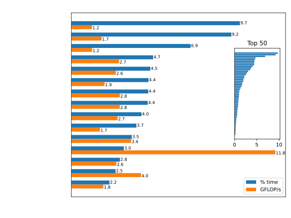
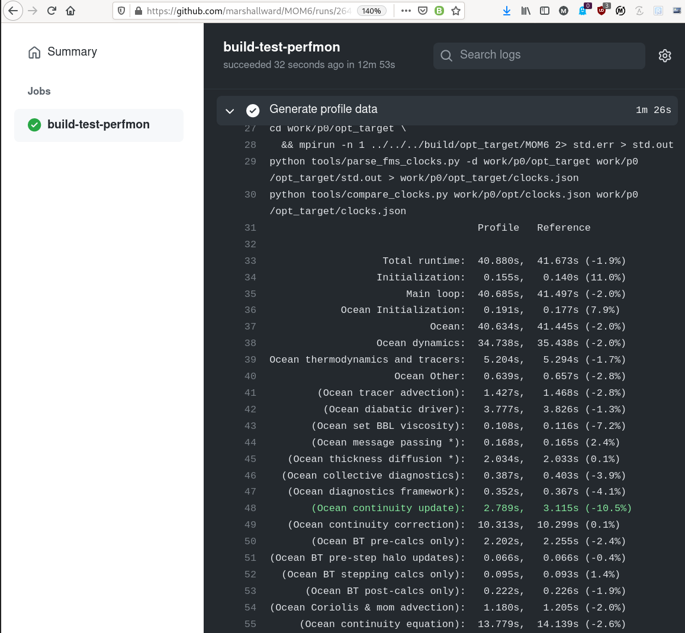

Maintain Pipelines
Don't stop, keep going, even over land!

Marshall Ward
2021-05-21
\[W \le N \times f \times I_\text{vec}\]
| \(W\) | FLOPs per second ("work") |
| \(N\) | # of CPUs |
| \(f\) | Cycles per second |
| \(I_\text{vec}\) | FLOPs per cycle |
MOM5 scaling in ACCESS-OM2
CPU scalability has proven effective to boost performance. But such methods have limits (~0.1s / step) And as resolutions increase, CFL implies more steps. |

|
Clock speed was a traditional measure of performance But overheating broke this trend around 2005 (see "Dennard scaling") Since then, speeds waver around 3GHz |

|
Despite halt of \(f\), floating point rates have increased SPECfp shows the general FP trend over time and CPUs |
 |
Usually not a good idea to combine SPECfp's, but one can normalize based on Intel CPUs to create some kind of trend. |
Viable but CFL-limited
Unchanged for >15 years
Potential speedup?
| Instr. | Size | GFLOP/s | Obs. (Gaea) |
|---|---|---|---|
| SSE | 2 doubles | 7.2 | 7.196 |
| AVX | 4 doubles | 14.4 | 14.395 |
(\(f_\text{peak}\) = 3.6 GHz)
\(d \leftarrow a \times b + c\)
| Instr. | Op | GFLOP/s | Obs. |
|---|---|---|---|
SSE |
Add FMA |
7.2 14.4 |
7.196 14.394 |
AVX |
Add FMA |
14.4 28.8 |
14.395 28.788 |
\(\text{rd}(\text{rd}(a \times b) + c)\) vs \(\text{rd}(a \times b + c)\)

2 inst. per cycle, even FMA
| Operation | GFLOP/s | Obs. |
|---|---|---|
| Add | 14.4 | 14.395 |
| Add+Mul | 28.8 | 28.788 |
| FMA | 28.8 | 28.788 |
| 2x FMA | 57.6 | 57.576 |
| Instr. | Op | GFLOP/s | Obs. |
|---|---|---|---|
SSE |
Add FMA 2x FMA |
7.2 14.4 28.8 |
7.196 14.394 28.788 |
AVX |
Add Add+Mul FMA 2x FMA |
14.4 28.8 28.8 57.6 |
14.395 28.788 28.788 57.576 |

| Expression | Max | L2 | L3 | DRAM |
|---|---|---|---|---|
| y[:] = x[:] + y[:] | 9.3 | 3.5 | 1.8 | 0.7 |
| y[:] = a x[:] + y[:] | 18.3 | 7.0 | 3.6 | 1.4 |
| y[:] = a x[:] + b y[:] | 23.9 | 10.6 | 5.5 | 2.0 |
| Expression | Max | L2 | L3 | DRAM |
|---|---|---|---|---|
| y[:] = a x[:] | 11.1 | 3.5 | 1.8 | 0.7 |
| y[:] = x[:] + x[:] | 12.3 | 3.6 | 1.8 | 0.7 |
| y[:] = x[:] + y[:] | 9.3 | 3.5 | 1.8 | 0.7 |
| y[:] = a x[:] + y[:] | 18.3 | 7.0 | 3.6 | 1.4 |
| y[:] = a x[:] + b y[:] | 23.9 | 10.6 | 5.5 | 2.0 |
| y[:] = x[1:] - x[:-1] | 7.0 | 3.4 | 1.8 | 0.7 |
| y[:] = x[8:] - x[:-8] | 9.3 | 3.5 | 1.8 | 0.7 |


Performance counter stats for '../../build/intel/MOM6':
22397.33 msec task-clock:u # 0.986 CPUs utilized
84092282119 cycles:u # 3.755 GHz
45781959071 stalled-cycles-backend:u # 54.44% idle cycles
11481435369 l2_cycles_waiting_on_fills:u # 512.625 M/sec
59207044954 fp_ret_sse_avx_ops.all:u # 2643.487 M/sec
22.709657811 seconds time elapsed
22.232343000 seconds user
0.116333000 seconds sys

coradcalc)btstep)find_coupling_coef)int_density_dz_wright) do j=Jsq,Jeq+1 ; do i=Isq,Ieq+1
if ((CS%Smagorinsky_Kh) .or. (CS%Smagorinsky_Ah)) then
Shear_mag = sqrt(sh_xx(i,j)*sh_xx(i,j) + &
0.25*((sh_xy(I-1,J-1)*sh_xy(I-1,J-1) + sh_xy(I,J)*sh_xy(I,J)) + &
(sh_xy(I-1,J)*sh_xy(I-1,J) + sh_xy(I,J-1)*sh_xy(I,J-1))))
endif
if ((CS%Leith_Kh) .or. (CS%Leith_Ah)) then
if (CS%use_QG_Leith_visc) then
vert_vort_mag = MIN(grad_vort_mag_h(i,j) + grad_div_mag_h(i,j),3.*grad_vort_mag_h_2d(i,j))
else
vert_vort_mag = (grad_vort_mag_h(i,j) + grad_div_mag_h(i,j))
endif
endif
if (CS%better_bound_Ah .or. CS%better_bound_Kh) then
hrat_min = min(1.0, min(h_u(I,j), h_u(I-1,j), h_v(i,J), h_v(i,J-1)) / &
(h(i,j,k) + h_neglect) )
visc_bound_rem = 1.0
endif
if (CS%Laplacian) then
! Determine the Laplacian viscosity at h points, using the
! largest value from several parameterizations.
Kh = CS%Kh_bg_xx(i,j) ! Static (pre-computed) background viscosity
if (CS%add_LES_viscosity) then
if (CS%Smagorinsky_Kh) Kh = Kh + CS%Laplac2_const_xx(i,j) * Shear_mag
if (CS%Leith_Kh) Kh = Kh + CS%Laplac3_const_xx(i,j) * vert_vort_mag*inv_PI3
else
if (CS%Smagorinsky_Kh) Kh = max( Kh, CS%Laplac2_const_xx(i,j) * Shear_mag )
if (CS%Leith_Kh) Kh = max( Kh, CS%Laplac3_const_xx(i,j) * vert_vort_mag*inv_PI3)
endif
! All viscosity contributions above are subject to resolution scaling
if (rescale_Kh) Kh = VarMix%Res_fn_h(i,j) * Kh
if (CS%res_scale_MEKE) meke_res_fn = VarMix%Res_fn_h(i,j)
! Older method of bounding for stability
if (legacy_bound) Kh = min(Kh, CS%Kh_Max_xx(i,j))
Kh = max( Kh, CS%Kh_bg_min ) ! Place a floor on the viscosity, if desired.
if (use_MEKE_Ku) &
Kh = Kh + MEKE%Ku(i,j) * meke_res_fn ! *Add* the MEKE contribution (might be negative)
if (CS%anisotropic) Kh = Kh + CS%Kh_aniso * ( 1. - CS%n1n2_h(i,j)**2 ) ! *Add* the tension component
! of anisotropic viscosity
! Newer method of bounding for stability
if (CS%better_bound_Kh) then
if (Kh >= hrat_min*CS%Kh_Max_xx(i,j)) then
visc_bound_rem = 0.0
Kh = hrat_min*CS%Kh_Max_xx(i,j)
else
visc_bound_rem = 1.0 - Kh / (hrat_min*CS%Kh_Max_xx(i,j))
endif
endif
if ((CS%id_Kh_h>0) .or. find_FrictWork .or. CS%debug) Kh_h(i,j,k) = Kh
if (CS%id_grid_Re_Kh>0) then
KE = 0.125*((u(I,j,k)+u(I-1,j,k))**2 + (v(i,J,k)+v(i,J-1,k))**2)
grid_Re_Kh(i,j,k) = (sqrt(KE) * sqrt(CS%grid_sp_h2(i,j))) &
/ max(Kh, CS%min_grid_Kh)
endif
if (CS%id_div_xx_h>0) div_xx_h(i,j,k) = div_xx(i,j)
if (CS%id_sh_xx_h>0) sh_xx_h(i,j,k) = sh_xx(i,j)
str_xx(i,j) = -Kh * sh_xx(i,j)
else ! not Laplacian
str_xx(i,j) = 0.0
endif ! Laplacian
if (CS%anisotropic) then
! Shearing-strain averaged to h-points
local_strain = 0.25 * ( (sh_xy(I,J) + sh_xy(I-1,J-1)) + (sh_xy(I-1,J) + sh_xy(I,J-1)) )
! *Add* the shear-strain contribution to the xx-component of stress
str_xx(i,j) = str_xx(i,j) - CS%Kh_aniso * CS%n1n2_h(i,j) * CS%n1n1_m_n2n2_h(i,j) * local_strain
endif
if (CS%biharmonic) then
! Determine the biharmonic viscosity at h points, using the
! largest value from several parameterizations.
AhSm = 0.0; AhLth = 0.0
if ((CS%Smagorinsky_Ah) .or. (CS%Leith_Ah)) then
if (CS%Smagorinsky_Ah) then
if (CS%bound_Coriolis) then
AhSm = Shear_mag * (CS%Biharm_const_xx(i,j) + &
CS%Biharm_const2_xx(i,j)*Shear_mag)
else
AhSm = CS%Biharm_const_xx(i,j) * Shear_mag
endif
endif
if (CS%Leith_Ah) AhLth = CS%Biharm6_const_xx(i,j) * abs(Del2vort_h(i,j)) * inv_PI6
Ah = MAX(MAX(CS%Ah_bg_xx(i,j), AhSm), AhLth)
if (CS%bound_Ah .and. .not.CS%better_bound_Ah) &
Ah = MIN(Ah, CS%Ah_Max_xx(i,j))
else
Ah = CS%Ah_bg_xx(i,j)
endif ! Smagorinsky_Ah or Leith_Ah
if (use_MEKE_Au) Ah = Ah + MEKE%Au(i,j) ! *Add* the MEKE contribution
if (CS%Re_Ah > 0.0) then
KE = 0.125*((u(I,j,k)+u(I-1,j,k))**2 + (v(i,J,k)+v(i,J-1,k))**2)
Ah = sqrt(KE) * CS%Re_Ah_const_xx(i,j)
endif
if (CS%better_bound_Ah) then
Ah = MIN(Ah, visc_bound_rem*hrat_min*CS%Ah_Max_xx(i,j))
endif
if ((CS%id_Ah_h>0) .or. find_FrictWork .or. CS%debug) Ah_h(i,j,k) = Ah
if (CS%id_grid_Re_Ah>0) then
KE = 0.125*((u(I,j,k)+u(I-1,j,k))**2 + (v(i,J,k)+v(i,J-1,k))**2)
grid_Re_Ah(i,j,k) = (sqrt(KE) * CS%grid_sp_h3(i,j)) &
/ max(Ah, CS%min_grid_Ah)
endif
str_xx(i,j) = str_xx(i,j) + Ah * &
(CS%DY_dxT(i,j) * (G%IdyCu(I,j)*Del2u(I,j) - G%IdyCu(I-1,j)*Del2u(I-1,j)) - &
CS%DX_dyT(i,j) * (G%IdxCv(i,J)*Del2v(i,J) - G%IdxCv(i,J-1)*Del2v(i,J-1)))
! Keep a copy of the biharmonic contribution for backscatter parameterization
bhstr_xx(i,j) = Ah * &
(CS%DY_dxT(i,j) * (G%IdyCu(I,j)*Del2u(I,j) - G%IdyCu(I-1,j)*Del2u(I-1,j)) - &
CS%DX_dyT(i,j) * (G%IdxCv(i,J)*Del2v(i,J) - G%IdxCv(i,J-1)*Del2v(i,J-1)))
bhstr_xx(i,j) = bhstr_xx(i,j) * (h(i,j,k) * CS%reduction_xx(i,j))
endif ! biharmonic
enddo ; enddo
Many disparate updates per iteration
│ │833 Shear_mag = sqrt(sh_xx(i,j)*sh_xx(i,j) + &
│ 0.70 │ vaddsd %xmm13,%xmm12,%xmm14
│ 1.62 │ vsqrtsd %xmm14,%xmm14,%xmm14
│ 6.53 │ vmovsd %xmm14,-0x8e8(%rbp)v___sd |
Serial |
v___pd |
Parallel |
│ │919 Ah = MAX(MAX(CS%Ah_bg_xx(i,j), AhSm), AhLth)
│ │ lea (%rax,%rdx,8),%rdi
│ │ lea (%rdi,%rsi,1),%r8
│ 0.39 │ vmovsd (%r8,%r9,8),%xmm0
│ 0.01 │ vmaxsd -0x13f8(%rbp),%xmm0,%xmm0
│ 2.34 │ vmaxsd -0x13f0(%rbp),%xmm0,%xmm0
│ 0.42 │ vmovsd %xmm0,-0x1468(%rbp)| lea | Compute mem address |
| vmovsd | Serial move |
| vmaxsd | Serial max |
if ((CS%Smagorinsky_Kh) .or. (CS%Smagorinsky_Ah)) then
do j=Jsq,Jeq+1 ; do i=Isq,Ieq+1
sh_xx_sq = sh_xx(i,j) * sh_xx(i,j)
sh_xy_sq = 0.25 * ( &
(sh_xy(I-1,J-1) * sh_xy(I-1,J-1) + sh_xy(I,J) * sh_xy(I,J)) &
+ (sh_xy(I-1,J) * sh_xy(I-1,J) + sh_xy(I,J-1) * sh_xy(I,J-1)) &
)
Shear_mag(i,j) = sqrt(sh_xx_sq + sh_xy_sq)
enddo ; enddo
endif
if (CS%better_bound_Ah .or. CS%better_bound_Kh) then
do j=Jsq,Jeq+1 ; do i=Isq,Ieq+1
h_min = min(h_u(I,j), h_u(I-1,j), h_v(i,J), h_v(i,J-1))
hrat_min(i,j) = min(1.0, h_min / (h(i,j,k) + h_neglect))
enddo ; enddo
if (CS%better_bound_Kh) then
do j=Jsq,Jeq+1 ; do i=Isq,Ieq+1
visc_bound_rem(i,j) = 1.0
enddo ; enddo
endif
endif
if (CS%Laplacian) then
if ((CS%Leith_Kh) .or. (CS%Leith_Ah)) then
if (CS%use_QG_Leith_visc) then
do j=Jsq,Jeq+1 ; do i=Isq,Ieq+1
grad_vort = grad_vort_mag_h(i,j) + grad_div_mag_h(i,j)
grad_vort_qg = 3. * grad_vort_mag_h_2d(i,j)
vert_vort_mag(i,j) = min(grad_vort, grad_vort_qg)
enddo ; enddo
else
do j=Jsq,Jeq+1 ; do i=Isq,Ieq+1
vert_vort_mag(i,j) = grad_vort_mag_h(i,j) + grad_div_mag_h(i,j)
enddo ; enddo
endif
endif
! Determine the Laplacian viscosity at h points, using the
! largest value from several parameterizations.
! Static (pre-computed) background viscosity
do j=Jsq,Jeq+1 ; do i=Isq,Ieq+1
Kh(i,j) = CS%Kh_bg_xx(i,j)
enddo ; enddo
! NOTE: The following do-block can be decomposed and vectorized after the
! stack size has been reduced.
do j=Jsq,Jeq+1 ; do i=Isq,Ieq+1
if (CS%add_LES_viscosity) then
if (CS%Smagorinsky_Kh) &
Kh(i,j) = Kh(i,j) + CS%Laplac2_const_xx(i,j) * Shear_mag(i,j)
if (CS%Leith_Kh) &
Kh(i,j) = Kh(i,j) + CS%Laplac3_const_xx(i,j) * vert_vort_mag(i,j) * inv_PI3
else
if (CS%Smagorinsky_Kh) &
Kh(i,j) = max(Kh(i,j), CS%Laplac2_const_xx(i,j) * Shear_mag(i,j))
if (CS%Leith_Kh) &
Kh(i,j) = max(Kh(i,j), CS%Laplac3_const_xx(i,j) * vert_vort_mag(i,j) * inv_PI3)
endif
enddo ; enddo
! All viscosity contributions above are subject to resolution scaling
if (rescale_Kh) then
do j=Jsq,Jeq+1 ; do i=Isq,Ieq+1
Kh(i,j) = VarMix%Res_fn_h(i,j) * Kh(i,j)
enddo ; enddo
endif
if (legacy_bound) then
! Older method of bounding for stability
do j=Jsq,Jeq+1 ; do i=Isq,Ieq+1
Kh(i,j) = min(Kh(i,j), CS%Kh_Max_xx(i,j))
enddo ; enddo
endif
! Place a floor on the viscosity, if desired.
do j=Jsq,Jeq+1 ; do i=Isq,Ieq+1
Kh(i,j) = max(Kh(i,j), CS%Kh_bg_min)
enddo ; enddo
do j=Jsq,Jeq+1 ; do i=Isq,Ieq+1
if (CS%res_scale_MEKE) meke_res_fn = VarMix%Res_fn_h(i,j)
if (use_MEKE_Ku) &
! *Add* the MEKE contribution (might be negative)
Kh(i,j) = Kh(i,j) + MEKE%Ku(i,j) * meke_res_fn
enddo ; enddo
if (CS%anisotropic) then
do j=Jsq,Jeq+1 ; do i=Isq,Ieq+1
! *Add* the tension component of anisotropic viscosity
Kh(i,j) = Kh(i,j) + CS%Kh_aniso * (1. - CS%n1n2_h(i,j)**2)
enddo ; enddo
endif
! Newer method of bounding for stability
do j=Jsq,Jeq+1 ; do i=Isq,Ieq+1
if (CS%better_bound_Kh) then
if (Kh(i,j) >= hrat_min(i,j) * CS%Kh_Max_xx(i,j)) then
visc_bound_rem(i,j) = 0.0
Kh(i,j) = hrat_min(i,j) * CS%Kh_Max_xx(i,j)
else
visc_bound_rem(i,j) = 1.0 - Kh(i,j) / (hrat_min(i,j) * CS%Kh_Max_xx(i,j))
endif
endif
enddo ; enddo
if (CS%id_Kh_h>0 .or. CS%debug) then
do j=Jsq,Jeq+1 ; do i=Isq,Ieq+1
Kh_h(i,j,k) = Kh(i,j)
enddo ; enddo
endif
if (CS%id_grid_Re_Kh>0) then
do j=Jsq,Jeq+1 ; do i=Isq,Ieq+1
KE = 0.125*((u(I,j,k)+u(I-1,j,k))**2 + (v(i,J,k)+v(i,J-1,k))**2)
grid_Kh = max(Kh(i,j), CS%min_grid_Kh)
grid_Re_Kh(i,j,k) = (sqrt(KE) * sqrt(CS%grid_sp_h2(i,j))) / grid_Kh
enddo ; enddo
endif
if (CS%id_div_xx_h>0) then
do j=Jsq,Jeq+1 ; do i=Isq,Ieq+1
div_xx_h(i,j,k) = div_xx(i,j)
enddo ; enddo
endif
if (CS%id_sh_xx_h>0) then
do j=Jsq,Jeq+1 ; do i=Isq,Ieq+1
sh_xx_h(i,j,k) = sh_xx(i,j)
enddo ; enddo
endif
do j=Jsq,Jeq+1 ; do i=Isq,Ieq+1
str_xx(i,j) = -Kh(i,j) * sh_xx(i,j)
enddo ; enddo
else
do j=Jsq,Jeq+1 ; do i=Isq,Ieq+1
str_xx(i,j) = 0.0
enddo ; enddo
endif
if (CS%anisotropic) then
do j=Jsq,Jeq+1 ; do i=Isq,Ieq+1
! Shearing-strain averaged to h-points
local_strain = 0.25 * ( (sh_xy(I,J) + sh_xy(I-1,J-1)) + (sh_xy(I-1,J) + sh_xy(I,J-1)) )
! *Add* the shear-strain contribution to the xx-component of stress
str_xx(i,j) = str_xx(i,j) - CS%Kh_aniso * CS%n1n2_h(i,j) * CS%n1n1_m_n2n2_h(i,j) * local_strain
enddo ; enddo
endif
if (CS%biharmonic) then
! Determine the biharmonic viscosity at h points, using the
! largest value from several parameterizations.
do j=Jsq,Jeq+1 ; do i=Isq,Ieq+1
Ah(i,j) = CS%Ah_bg_xx(i,j)
enddo ; enddo
if ((CS%Smagorinsky_Ah) .or. (CS%Leith_Ah)) then
if (CS%Smagorinsky_Ah) then
if (CS%bound_Coriolis) then
do j=Jsq,Jeq+1 ; do i=Isq,Ieq+1
AhSm = Shear_mag(i,j) * (CS%Biharm_const_xx(i,j) &
+ CS%Biharm_const2_xx(i,j) * Shear_mag(i,j) &
)
Ah(i,j) = max(Ah(i,j), AhSm)
enddo ; enddo
else
do j=Jsq,Jeq+1 ; do i=Isq,Ieq+1
AhSm = CS%Biharm_const_xx(i,j) * Shear_mag(i,j)
Ah(i,j) = max(Ah(i,j), AhSm)
enddo ; enddo
endif
endif
if (CS%Leith_Ah) then
do j=Jsq,Jeq+1 ; do i=Isq,Ieq+1
AhLth = CS%Biharm6_const_xx(i,j) * abs(Del2vort_h(i,j)) * inv_PI6
Ah(i,j) = max(Ah(i,j), AhLth)
enddo ; enddo
endif
if (CS%bound_Ah .and. .not. CS%better_bound_Ah) then
do j=Jsq,Jeq+1 ; do i=Isq,Ieq+1
Ah(i,j) = min(Ah(i,j), CS%Ah_Max_xx(i,j))
enddo ; enddo
endif
endif ! Smagorinsky_Ah or Leith_Ah
if (use_MEKE_Au) then
! *Add* the MEKE contribution
do j=Jsq,Jeq+1 ; do i=Isq,Ieq+1
Ah(i,j) = Ah(i,j) + MEKE%Au(i,j)
enddo ; enddo
endif
if (CS%Re_Ah > 0.0) then
do j=Jsq,Jeq+1 ; do i=Isq,Ieq+1
KE = 0.125*((u(I,j,k)+u(I-1,j,k))**2 + (v(i,J,k)+v(i,J-1,k))**2)
Ah(i,j) = sqrt(KE) * CS%Re_Ah_const_xx(i,j)
enddo ; enddo
endif
if (CS%better_bound_Ah) then
if (CS%better_bound_Kh) then
do j=Jsq,Jeq+1 ; do i=Isq,Ieq+1
Ah(i,j) = min(Ah(i,j), visc_bound_rem(i,j) * hrat_min(i,j) * CS%Ah_Max_xx(i,j))
enddo ; enddo
else
do j=Jsq,Jeq+1 ; do i=Isq,Ieq+1
Ah(i,j) = min(Ah(i,j), hrat_min(i,j) * CS%Ah_Max_xx(i,j))
enddo ; enddo
endif
endif
if ((CS%id_Ah_h>0) .or. CS%debug) then
do j=Jsq,Jeq+1 ; do i=Isq,Ieq+1
Ah_h(i,j,k) = Ah(i,j)
enddo ; enddo
endif
if (CS%id_grid_Re_Ah>0) then
do j=Jsq,Jeq+1 ; do i=Isq,Ieq+1
KE = 0.125 * ((u(I,j,k) + u(I-1,j,k))**2 + (v(i,J,k) + v(i,J-1,k))**2)
grid_Ah = max(Ah(i,j), CS%min_grid_Ah)
grid_Re_Ah(i,j,k) = (sqrt(KE) * CS%grid_sp_h3(i,j)) / grid_Ah
enddo ; enddo
endif
do j=Jsq,Jeq+1 ; do i=Isq,Ieq+1
d_del2u = G%IdyCu(I,j) * Del2u(I,j) - G%IdyCu(I-1,j) * Del2u(I-1,j)
d_del2v = G%IdxCv(i,J) * Del2v(i,J) - G%IdxCv(i,J-1) * Del2v(i,J-1)
d_str = Ah(i,j) * (CS%DY_dxT(i,j) * d_del2u - CS%DX_dyT(i,j) * d_del2v)
str_xx(i,j) = str_xx(i,j) + d_str
! Keep a copy of the biharmonic contribution for backscatter parameterization
bhstr_xx(i,j) = d_str * (h(i,j,k) * CS%reduction_xx(i,j))
enddo ; enddo
endif
if (CS%biharmonic) then
! Gradient of Laplacian, for use in bi-harmonic term
do J=js-1,Jeq ; do I=is-1,Ieq
dDel2vdx(I,J) = CS%DY_dxBu(I,J)*(Del2v(i+1,J)*G%IdyCv(i+1,J) - Del2v(i,J)*G%IdyCv(i,J))
dDel2udy(I,J) = CS%DX_dyBu(I,J)*(Del2u(I,j+1)*G%IdxCu(I,j+1) - Del2u(I,j)*G%IdxCu(I,j))
enddo ; enddo
! Adjust contributions to shearing strain on open boundaries.
if (apply_OBC) then ; if (OBC%zero_strain .or. OBC%freeslip_strain) then
do n=1,OBC%number_of_segments
J = OBC%segment(n)%HI%JsdB ; I = OBC%segment(n)%HI%IsdB
if (OBC%segment(n)%is_N_or_S .and. (J >= js-1) .and. (J <= Jeq)) then
do I=OBC%segment(n)%HI%IsdB,OBC%segment(n)%HI%IedB
if (OBC%zero_strain) then
dDel2vdx(I,J) = 0. ; dDel2udy(I,J) = 0.
elseif (OBC%freeslip_strain) then
dDel2udy(I,J) = 0.
endif
enddo
elseif (OBC%segment(n)%is_E_or_W .and. (I >= is-1) .and. (I <= Ieq)) then
do J=OBC%segment(n)%HI%JsdB,OBC%segment(n)%HI%JedB
if (OBC%zero_strain) then
dDel2vdx(I,J) = 0. ; dDel2udy(I,J) = 0.
elseif (OBC%freeslip_strain) then
dDel2vdx(I,J) = 0.
endif
enddo
endif
enddo
endif ; endif
endif
| Platform | Runtime | Speedup |
|---|---|---|
| Intel (Gaea) | 2.23s → 1.27s | 1.75x |
| AMD (home) | 1.69s → 1.01s | 1.67x |
do J=Jsq-1,Jeq+1 ; do I=Isq-1,Ieq+1
if (CS%no_slip ) then
relative_vorticity = (2.0-G%mask2dBu(I,J)) * (dvdx(I,J) - dudy(I,J)) * G%IareaBu(I,J)
else
relative_vorticity = G%mask2dBu(I,J) * (dvdx(I,J) - dudy(I,J)) * G%IareaBu(I,J)
endif
absolute_vorticity = G%CoriolisBu(I,J) + relative_vorticity
Ih = 0.0
if (Area_q(i,j) > 0.0) then
hArea_q = (hArea_u(I,j) + hArea_u(I,j+1)) + (hArea_v(i,J) + hArea_v(i+1,J))
Ih = Area_q(i,j) / (hArea_q + h_neglect*Area_q(i,j))
endif
q(I,J) = absolute_vorticity * Ih
abs_vort(I,J) = absolute_vorticity
Ih_q(I,J) = Ih
if (CS%bound_Coriolis) then
fv1 = absolute_vorticity * v(i+1,J,k)
fv2 = absolute_vorticity * v(i,J,k)
fu1 = -absolute_vorticity * u(I,j+1,k)
fu2 = -absolute_vorticity * u(I,j,k)
if (fv1 > fv2) then
max_fvq(I,J) = fv1 ; min_fvq(I,J) = fv2
else
max_fvq(I,J) = fv2 ; min_fvq(I,J) = fv1
endif
if (fu1 > fu2) then
max_fuq(I,J) = fu1 ; min_fuq(I,J) = fu2
else
max_fuq(I,J) = fu2 ; min_fuq(I,J) = fu1
endif
endif
if (CS%id_rv > 0) RV(I,J,k) = relative_vorticity
if (CS%id_PV > 0) PV(I,J,k) = q(I,J)
if (associated(AD%rv_x_v) .or. associated(AD%rv_x_u)) &
q2(I,J) = relative_vorticity * Ih
enddo ; enddo
! a, b, c, and d are combinations of neighboring potential
! vorticities which form the Arakawa and Hsu vorticity advection
! scheme. All are defined at u grid points.
if (CS%Coriolis_Scheme == ARAKAWA_HSU90) then
do j=Jsq,Jeq+1
do I=is-1,Ieq
a(I,j) = (q(I,J) + (q(I+1,J) + q(I,J-1))) * C1_12
d(I,j) = ((q(I,J) + q(I+1,J-1)) + q(I,J-1)) * C1_12
enddo
do I=Isq,Ieq
b(I,j) = (q(I,J) + (q(I-1,J) + q(I,J-1))) * C1_12
c(I,j) = ((q(I,J) + q(I-1,J-1)) + q(I,J-1)) * C1_12
enddo
enddo
elseif (CS%Coriolis_Scheme == ARAKAWA_LAMB81) then
do j=Jsq,Jeq+1 ; do I=Isq,Ieq+1
a(I-1,j) = (2.0*(q(I,J) + q(I-1,J-1)) + (q(I-1,J) + q(I,J-1))) * C1_24
d(I-1,j) = ((q(I,j) + q(I-1,J-1)) + 2.0*(q(I-1,J) + q(I,J-1))) * C1_24
b(I,j) = ((q(I,J) + q(I-1,J-1)) + 2.0*(q(I-1,J) + q(I,J-1))) * C1_24
c(I,j) = (2.0*(q(I,J) + q(I-1,J-1)) + (q(I-1,J) + q(I,J-1))) * C1_24
ep_u(i,j) = ((q(I,J) - q(I-1,J-1)) + (q(I-1,J) - q(I,J-1))) * C1_24
ep_v(i,j) = (-(q(I,J) - q(I-1,J-1)) + (q(I-1,J) - q(I,J-1))) * C1_24
enddo ; enddo
elseif (CS%Coriolis_Scheme == AL_BLEND) then
Fe_m2 = CS%F_eff_max_blend - 2.0
rat_lin = 1.5 * Fe_m2 / max(CS%wt_lin_blend, 1.0e-16)
! This allows the code to always give Sadourny Energy
if (CS%F_eff_max_blend <= 2.0) then ; Fe_m2 = -1. ; rat_lin = -1.0 ; endif
do j=Jsq,Jeq+1 ; do I=Isq,Ieq+1
min_Ihq = MIN(Ih_q(I-1,J-1), Ih_q(I,J-1), Ih_q(I-1,J), Ih_q(I,J))
max_Ihq = MAX(Ih_q(I-1,J-1), Ih_q(I,J-1), Ih_q(I-1,J), Ih_q(I,J))
rat_m1 = 1.0e15
if (max_Ihq < 1.0e15*min_Ihq) rat_m1 = max_Ihq / min_Ihq - 1.0
! The weights used here are designed to keep the effective Coriolis
! acceleration from any one point on its neighbors within a factor
! of F_eff_max. The minimum permitted value is 2 (the factor for
! Sadourny's energy conserving scheme).
! Determine the relative weights of Arakawa & Lamb vs. Arakawa and Hsu.
if (rat_m1 <= Fe_m2) then ; AL_wt = 1.0
elseif (rat_m1 < 1.5*Fe_m2) then ; AL_wt = 3.0*Fe_m2 / rat_m1 - 2.0
else ; AL_wt = 0.0 ; endif
! Determine the relative weights of Sadourny Energy vs. the other two.
if (rat_m1 <= 1.5*Fe_m2) then ; Sad_wt = 0.0
elseif (rat_m1 <= rat_lin) then
Sad_wt = 1.0 - (1.5*Fe_m2) / rat_m1
elseif (rat_m1 < 2.0*rat_lin) then
Sad_wt = 1.0 - (CS%wt_lin_blend / rat_lin) * (rat_m1 - 2.0*rat_lin)
else ; Sad_wt = 1.0 ; endif
a(I-1,j) = Sad_wt * 0.25 * q(I-1,J) + (1.0 - Sad_wt) * &
( ((2.0-AL_wt)* q(I-1,J) + AL_wt*q(I,J-1)) + &
2.0 * (q(I,J) + q(I-1,J-1)) ) * C1_24
d(I-1,j) = Sad_wt * 0.25 * q(I-1,J-1) + (1.0 - Sad_wt) * &
( ((2.0-AL_wt)* q(I-1,J-1) + AL_wt*q(I,J)) + &
2.0 * (q(I-1,J) + q(I,J-1)) ) * C1_24
b(I,j) = Sad_wt * 0.25 * q(I,J) + (1.0 - Sad_wt) * &
( ((2.0-AL_wt)* q(I,J) + AL_wt*q(I-1,J-1)) + &
2.0 * (q(I-1,J) + q(I,J-1)) ) * C1_24
c(I,j) = Sad_wt * 0.25 * q(I,J-1) + (1.0 - Sad_wt) * &
( ((2.0-AL_wt)* q(I,J-1) + AL_wt*q(I-1,J)) + &
2.0 * (q(I,J) + q(I-1,J-1)) ) * C1_24
ep_u(i,j) = AL_wt * ((q(I,J) - q(I-1,J-1)) + (q(I-1,J) - q(I,J-1))) * C1_24
ep_v(i,j) = AL_wt * (-(q(I,J) - q(I-1,J-1)) + (q(I-1,J) - q(I,J-1))) * C1_24
enddo ; enddo
endif
if (CS%Coriolis_En_Dis) then
! c1 = 1.0-1.5*RANGE ; c2 = 1.0-RANGE ; c3 = 2.0 ; slope = 0.5
c1 = 1.0-1.5*0.5 ; c2 = 1.0-0.5 ; c3 = 2.0 ; slope = 0.5
do j=Jsq,Jeq+1 ; do I=is-1,ie
uhc = uh_center(I,j)
uhm = uh(I,j,k)
! This sometimes matters with some types of open boundary conditions.
if (G%dy_Cu(I,j) == 0.0) uhc = uhm
if (abs(uhc) < 0.1*abs(uhm)) then
uhm = 10.0*uhc
elseif (abs(uhc) > c1*abs(uhm)) then
if (abs(uhc) < c2*abs(uhm)) then ; uhc = (3.0*uhc+(1.0-c2*3.0)*uhm)
elseif (abs(uhc) <= c3*abs(uhm)) then ; uhc = uhm
else ; uhc = slope*uhc+(1.0-c3*slope)*uhm
endif
endif
if (uhc > uhm) then
uh_min(I,j) = uhm ; uh_max(I,j) = uhc
else
uh_max(I,j) = uhm ; uh_min(I,j) = uhc
endif
enddo ; enddo
do J=js-1,je ; do i=Isq,Ieq+1
vhc = vh_center(i,J)
vhm = vh(i,J,k)
! This sometimes matters with some types of open boundary conditions.
if (G%dx_Cv(i,J) == 0.0) vhc = vhm
if (abs(vhc) < 0.1*abs(vhm)) then
vhm = 10.0*vhc
elseif (abs(vhc) > c1*abs(vhm)) then
if (abs(vhc) < c2*abs(vhm)) then ; vhc = (3.0*vhc+(1.0-c2*3.0)*vhm)
elseif (abs(vhc) <= c3*abs(vhm)) then ; vhc = vhm
else ; vhc = slope*vhc+(1.0-c3*slope)*vhm
endif
endif
if (vhc > vhm) then
vh_min(i,J) = vhm ; vh_max(i,J) = vhc
else
vh_max(i,J) = vhm ; vh_min(i,J) = vhc
endif
enddo ; enddo
endif
! Calculate KE and the gradient of KE
call gradKE(u, v, h, KE, KEx, KEy, k, OBC, G, GV, US, CS)
! Calculate the tendencies of zonal velocity due to the Coriolis
! force and momentum advection. On a Cartesian grid, this is
! CAu = q * vh - d(KE)/dx.
if (CS%Coriolis_Scheme == SADOURNY75_ENERGY) then
if (CS%Coriolis_En_Dis) then
! Energy dissipating biased scheme, Hallberg 200x
do j=js,je ; do I=Isq,Ieq
if (q(I,J)*u(I,j,k) == 0.0) then
temp1 = q(I,J) * ( (vh_max(i,j)+vh_max(i+1,j)) &
+ (vh_min(i,j)+vh_min(i+1,j)) )*0.5
elseif (q(I,J)*u(I,j,k) < 0.0) then
temp1 = q(I,J) * (vh_max(i,j)+vh_max(i+1,j))
else
temp1 = q(I,J) * (vh_min(i,j)+vh_min(i+1,j))
endif
if (q(I,J-1)*u(I,j,k) == 0.0) then
temp2 = q(I,J-1) * ( (vh_max(i,j-1)+vh_max(i+1,j-1)) &
+ (vh_min(i,j-1)+vh_min(i+1,j-1)) )*0.5
elseif (q(I,J-1)*u(I,j,k) < 0.0) then
temp2 = q(I,J-1) * (vh_max(i,j-1)+vh_max(i+1,j-1))
else
temp2 = q(I,J-1) * (vh_min(i,j-1)+vh_min(i+1,j-1))
endif
CAu(I,j,k) = 0.25 * G%IdxCu(I,j) * (temp1 + temp2)
enddo ; enddo
else
! Energy conserving scheme, Sadourny 1975
do j=js,je ; do I=Isq,Ieq
CAu(I,j,k) = 0.25 * &
(q(I,J) * (vh(i+1,J,k) + vh(i,J,k)) + &
q(I,J-1) * (vh(i,J-1,k) + vh(i+1,J-1,k))) * G%IdxCu(I,j)
enddo ; enddo
endif
elseif (CS%Coriolis_Scheme == SADOURNY75_ENSTRO) then
do j=js,je ; do I=Isq,Ieq
CAu(I,j,k) = 0.125 * (G%IdxCu(I,j) * (q(I,J) + q(I,J-1))) * &
((vh(i+1,J,k) + vh(i,J,k)) + (vh(i,J-1,k) + vh(i+1,J-1,k)))
enddo ; enddo
elseif ((CS%Coriolis_Scheme == ARAKAWA_HSU90) .or. &
(CS%Coriolis_Scheme == ARAKAWA_LAMB81) .or. &
(CS%Coriolis_Scheme == AL_BLEND)) then
! (Global) Energy and (Local) Enstrophy conserving, Arakawa & Hsu 1990
do j=js,je ; do I=Isq,Ieq
CAu(I,j,k) = ((a(I,j) * vh(i+1,J,k) + c(I,j) * vh(i,J-1,k)) + &
(b(I,j) * vh(i,J,k) + d(I,j) * vh(i+1,J-1,k))) * G%IdxCu(I,j)
enddo ; enddo
elseif (CS%Coriolis_Scheme == ROBUST_ENSTRO) then
! An enstrophy conserving scheme robust to vanishing layers
! Note: Heffs are in lieu of h_at_v that should be returned by the
! continuity solver. AJA
do j=js,je ; do I=Isq,Ieq
Heff1 = abs(vh(i,J,k) * G%IdxCv(i,J)) / (eps_vel+abs(v(i,J,k)))
Heff1 = max(Heff1, min(h(i,j,k),h(i,j+1,k)))
Heff1 = min(Heff1, max(h(i,j,k),h(i,j+1,k)))
Heff2 = abs(vh(i,J-1,k) * G%IdxCv(i,J-1)) / (eps_vel+abs(v(i,J-1,k)))
Heff2 = max(Heff2, min(h(i,j-1,k),h(i,j,k)))
Heff2 = min(Heff2, max(h(i,j-1,k),h(i,j,k)))
Heff3 = abs(vh(i+1,J,k) * G%IdxCv(i+1,J)) / (eps_vel+abs(v(i+1,J,k)))
Heff3 = max(Heff3, min(h(i+1,j,k),h(i+1,j+1,k)))
Heff3 = min(Heff3, max(h(i+1,j,k),h(i+1,j+1,k)))
Heff4 = abs(vh(i+1,J-1,k) * G%IdxCv(i+1,J-1)) / (eps_vel+abs(v(i+1,J-1,k)))
Heff4 = max(Heff4, min(h(i+1,j-1,k),h(i+1,j,k)))
Heff4 = min(Heff4, max(h(i+1,j-1,k),h(i+1,j,k)))
if (CS%PV_Adv_Scheme == PV_ADV_CENTERED) then
CAu(I,j,k) = 0.5*(abs_vort(I,J)+abs_vort(I,J-1)) * &
((vh(i,J,k) + vh(i+1,J-1,k)) + (vh(i,J-1,k) + vh(i+1,J,k)) ) / &
(h_tiny + ((Heff1+Heff4) + (Heff2+Heff3)) ) * G%IdxCu(I,j)
elseif (CS%PV_Adv_Scheme == PV_ADV_UPWIND1) then
VHeff = ((vh(i,J,k) + vh(i+1,J-1,k)) + (vh(i,J-1,k) + vh(i+1,J,k)) )
QVHeff = 0.5*( (abs_vort(I,J)+abs_vort(I,J-1))*VHeff &
-(abs_vort(I,J)-abs_vort(I,J-1))*abs(VHeff) )
CAu(I,j,k) = (QVHeff / ( h_tiny + ((Heff1+Heff4) + (Heff2+Heff3)) ) ) * G%IdxCu(I,j)
endif
enddo ; enddo
endif
! Add in the additonal terms with Arakawa & Lamb.
if ((CS%Coriolis_Scheme == ARAKAWA_LAMB81) .or. &
(CS%Coriolis_Scheme == AL_BLEND)) then ; do j=js,je ; do I=Isq,Ieq
CAu(I,j,k) = CAu(I,j,k) + &
(ep_u(i,j)*uh(I-1,j,k) - ep_u(i+1,j)*uh(I+1,j,k)) * G%IdxCu(I,j)
enddo ; enddo ; endif
if (CS%bound_Coriolis) then
do j=js,je ; do I=Isq,Ieq
max_fv = MAX(max_fvq(I,J), max_fvq(I,J-1))
min_fv = MIN(min_fvq(I,J), min_fvq(I,J-1))
! CAu(I,j,k) = min( CAu(I,j,k), max_fv )
! CAu(I,j,k) = max( CAu(I,j,k), min_fv )
if (CAu(I,j,k) > max_fv) then
CAu(I,j,k) = max_fv
else
if (CAu(I,j,k) < min_fv) CAu(I,j,k) = min_fv
endif
enddo ; enddo
endif
! Term - d(KE)/dx.
do j=js,je ; do I=Isq,Ieq
CAu(I,j,k) = CAu(I,j,k) - KEx(I,j)
if (associated(AD%gradKEu)) AD%gradKEu(I,j,k) = -KEx(I,j)
200 lines separate max_fvq write and read
! Add in the additonal terms with Arakawa & Lamb.
if ((CS%Coriolis_Scheme == ARAKAWA_LAMB81) .or. &
(CS%Coriolis_Scheme == AL_BLEND)) then ; do j=js,je ; do I=Isq,Ieq
CAu(I,j,k) = CAu(I,j,k) + &
(ep_u(i,j)*uh(I-1,j,k) - ep_u(i+1,j)*uh(I+1,j,k)) * G%IdxCu(I,j)
enddo ; enddo ; endif
if (CS%bound_Coriolis) then
do j=js,je ; do I=Isq,Ieq
fv1 = abs_vort(I,J) * v(i+1,J,k)
fv2 = abs_vort(I,J) * v(i,J,k)
fv3 = abs_vort(I,J-1) * v(i+1,J-1,k)
fv4 = abs_vort(I,J-1) * v(i,J-1,k)
max_fv = max(fv1, fv2, fv3, fv4)
min_fv = min(fv1, fv2, fv3, fv4)
CAu(I,j,k) = min(CAu(I,j,k), max_fv)
CAu(I,j,k) = max(CAu(I,j,k), min_fv)
enddo ; enddo
endif
! Term - d(KE)/dx.
do j=js,je ; do I=Isq,Ieq
CAu(I,j,k) = CAu(I,j,k) - KEx(I,j)
Keep fields collocated
| Platform | Runtime | Speedup |
|---|---|---|
| Intel | 1.06s → 0.87s | 1.23x |
| AMD | 1.11s → 0.64s | 1.74x |
LOOP BEGIN at ../../ac/../src/core/MOM_barotropic.F90(1491,26)
remark #15389: vectorization support: reference eta_wtd(i,j) has unaligned access [ ../../ac/../src/core/MOM_barotropic.F90(1492,7) ]
remark #15381: vectorization support: unaligned access used inside loop body
remark #15305: vectorization support: vector length 2
remark #15399: vectorization support: unroll factor set to 2
remark #15309: vectorization support: normalized vectorization overhead 0.300
remark #15300: LOOP WAS VECTORIZED
remark #15451: unmasked unaligned unit stride stores: 1
remark #15475: --- begin vector cost summary ---
remark #15476: scalar cost: 4
remark #15477: vector cost: 2.500
remark #15478: estimated potential speedup: 1.450
remark #15488: --- end vector cost summary ---
remark #25015: Estimate of max trip count of loop=3
LOOP ENDA typical vectorization report
LOOP BEGIN at ../../ac/../src/core/MOM_barotropic.F90(2383,39)
remark #25460: No loop optimizations reported
LOOP ENDremark #25464: Some optimizations were skipped to constrain compile
time. Consider overriding limits (-qoverride-limits).2000 lines may be too long...
Engage the Override! -qoverride-limts
| Platform | Runtime | Speedup |
|---|---|---|
| Intel | 2.35s → 1.60s | 1.46x |
| AMD | 3.13s → 1.66s | 1.89x |
Sustainable solution is to reduce size of btstep()
do K=nz,2,-1 ; do i=is,ie ; if (do_i(i)) then
! botfn determines when a point is within the influence of the bottom
! boundary layer, going from 1 at the bottom to 0 in the interior.
z2 = z_i(i,k)
botfn = 1.0 / (1.0 + 0.09*z2*z2*z2*z2*z2*z2)
if (CS%bottomdraglaw) then
Kv_tot(i,K) = Kv_tot(i,K) + (kv_bbl(i) - CS%Kv)*botfn
r = 0.5*(hvel(i,k) + hvel(i,k-1))
if (r > bbl_thick(i)) then
h_shear = ((1.0 - botfn) * r + botfn*bbl_thick(i)) + h_neglect
else
h_shear = r + h_neglect
endif
else
Kv_tot(i,K) = Kv_tot(i,K) + (CS%Kvbbl-CS%Kv)*botfn
h_shear = 0.5*(hvel(i,k) + hvel(i,k-1) + h_neglect)
endif
! Calculate the coupling coefficients from the viscosities.
a_cpl(i,K) = Kv_tot(i,K) / (h_shear*GV%H_to_Z + I_amax*Kv_tot(i,K))
endif ; enddo ; enddo ! i & k loops
do K=nz,2,-1 ; do i=is,ie
z2 = z_i(i,k)
botfn_2d(i,k) = 1.0 / (1.0 + 0.09*z2*z2*z2*z2*z2*z2)
enddo ; enddo ! i & k loops
if (CS%bottomdraglaw) then
do K=nz,2,-1 ; do i=is,ie
Kv_tot(i,K) = Kv_tot(i,K) + (kv_bbl(i) - CS%Kv) * botfn_2d(i,k)
r = 0.5*(hvel(i,k) + hvel(i,k-1))
if (r > bbl_thick(i)) then
h_shear_2d(i,k) = ((1.0 - botfn_2d(i,k)) * r + botfn_2d(i,k) * bbl_thick(i)) + h_neglect
else
h_shear_2d(i,k) = r + h_neglect
endif
enddo ; enddo ! i & k loops
else
do K=nz,2,-1 ; do i=is,ie
Kv_tot(i,K) = Kv_tot(i,K) + (CS%Kvbbl - CS%Kv) * botfn_2d(i,k)
h_shear_2d(i,k) = 0.5 * (hvel(i,k) + hvel(i,k-1) + h_neglect)
enddo ; enddo ! i & k loops
endif
do K=nz,2,-1 ; do i=is,ie
! Calculate the coupling coefficients from the viscosities.
a_cpl(i,K) = i_mask(i) * Kv_tot(i,K) &
/ (h_shear_2d(i,k) * GV%H_to_Z + I_amax * Kv_tot(i,K))
enddo ; enddo ! i & k loops
Remove do_i(:) to improve pipeline
Don't stop, keep going, even over land!
| Subroutine | GFLOP/s |
|---|---|
| vertvisc_coef | 1.29 → 2.00 |
| find_coupling_coef | 2.50 → 5.72 |
FLOPs are up!
| Subroutine | Runtime | Speedup |
|---|---|---|
| vertvisc_coef | 1.54s → 1.50s | 😐 |
| find_coupling_coef | 0.82s → 0.68s | 1.21x |
Runtimes, not so much
if (present(inty_dpa)) then ; do J=Jsq,Jeq ; do i=is,ie
! hWght is the distance measure by which the cell is violation of
! hydrostatic consistency. For large hWght we bias the interpolation of
! T & S along the top and bottom integrals, akin to thickness weighting.
hWght = 0.0
if (do_massWeight) &
hWght = max(0., -bathyT(i,j)-z_t(i,j+1), -bathyT(i,j+1)-z_t(i,j))
if (hWght > 0.) then
hL = (z_t(i,j) - z_b(i,j)) + dz_neglect
hR = (z_t(i,j+1) - z_b(i,j+1)) + dz_neglect
hWght = hWght * ( (hL-hR)/(hL+hR) )**2
iDenom = 1.0 / ( hWght*(hR + hL) + hL*hR )
hWt_LL = (hWght*hL + hR*hL) * iDenom ; hWt_LR = (hWght*hR) * iDenom
hWt_RR = (hWght*hR + hR*hL) * iDenom ; hWt_RL = (hWght*hL) * iDenom
else
hWt_LL = 1.0 ; hWt_LR = 0.0 ; hWt_RR = 1.0 ; hWt_RL = 0.0
endif
intz(1) = dpa(i,j) ; intz(5) = dpa(i,j+1)
do m=2,4
wt_L = 0.25*real(5-m) ; wt_R = 1.0-wt_L
wtT_L = wt_L*hWt_LL + wt_R*hWt_RL ; wtT_R = wt_L*hWt_LR + wt_R*hWt_RR
al0 = wtT_L*al0_2d(i,j) + wtT_R*al0_2d(i,j+1)
p0 = wtT_L*p0_2d(i,j) + wtT_R*p0_2d(i,j+1)
lambda = wtT_L*lambda_2d(i,j) + wtT_R*lambda_2d(i,j+1)
dz = wt_L*(z_t(i,j) - z_b(i,j)) + wt_R*(z_t(i,j+1) - z_b(i,j+1))
p_ave = -0.5*GxRho*(wt_L*(z_t(i,j)+z_b(i,j)) + &
wt_R*(z_t(i,j+1)+z_b(i,j+1)))
I_al0 = 1.0 / al0
I_Lzz = 1.0 / (p0 + (lambda * I_al0) + p_ave)
eps = 0.5*GxRho*dz*I_Lzz ; eps2 = eps*eps
intz(m) = Pa_to_RL2_T2 * ( g_Earth*dz*((p0 + p_ave)*(I_Lzz*I_al0) - rho_ref_mks) - 2.0*eps * &
I_Rho * (lambda * I_al0**2) * eps2 * (C1_3 + eps2*(0.2 + eps2*(C1_7 + C1_9*eps2))) )
enddo
! Use Boole's rule to integrate the values.
inty_dpa(i,j) = C1_90*(7.0*(intz(1)+intz(5)) + 32.0*(intz(2)+intz(4)) + 12.0*intz(3))
enddo ; enddo ; endif
High arithmetic intensity: many ops per memory access
Overall speedup of ~10%
1440 x 1080 x 75 points, 960 MPI ranks
| Subroutine | Runtimes | Speedup | (1-core) |
|---|---|---|---|
hor_visc |
1.51s → 0.81s | 1.87x | (1.75x) |
CorAdCalc |
0.81s → 0.71s | 1.14x | (1.23x) |
btstep |
4.08s → 3.53s | 1.22x | (1.46x) |
~7% speedup of dynamic core
| subroutine | Runtimes | Speedup | (1-core) |
|---|---|---|---|
vert_visc |
3.69s → 4.24s | 0.87x | (1x) |
NOTE: No CPU land masking
|  |
|
|
Enable vectorization, confirm optimizations
Minimize RAM access, collocate arrays
Memory alignment, more stack usage, peel loops
Redesign to optimize arithmetic intensity
One core vs 1 GPU task
6 cores vs 6 GPU tasks
Lots of layered sums, e.g.
do j=js,je
do k=1,nz
do I=Isq,Ieq
BT_force_u(I,j) = BT_force_u(I,j) &
+ wt_u(I,j,k) * bc_accel_u(I,j,k)
enddo
enddo
enddoVery non-contiguous! Reorder to (k,i,j)
Answer changes:
\[(u_1 + u_2 + u_3 + u_4) + (u_5 + u_6 + u_7 + u_8) + ...\]
Transpose needed outside of loops! Very slow...
do k=1,nz
u_tr(k,:,:) = u(:,:,k)
v_tr(k,:,:) = v(:,:,k)
! ...
enddoWork in progress...
This is slow:
botfn_2d(i,k) = 1.0 / (1.0 + 0.09*z2*z2*z2*z2*z2*z2)This is faster:
z2_sq = z2 * z2
botfn_2d(i,k) = 1.0 / (1.0 + 0.09 * (z2_sq * z2_sq * z2_sq))... but changes answers
horizontal_viscosity has 18 3D arrays on stack! And over 2x as many 2D arrays...
subroutine horizontal_viscosity(u, v, h, diffu, diffv, MEKE, VarMix, G, GV, US, &
CS, OBC, BT, TD, ADp)
type(ocean_grid_type), intent(in) :: G !< The ocean's grid structure.
type(verticalGrid_type), intent(in) :: GV !< The ocean's vertical grid structure.
real, dimension(SZIB_(G),SZJ_(G),SZK_(GV)), &
intent(in) :: u !< The zonal velocity [L T-1 ~> m s-1].
real, dimension(SZI_(G),SZJB_(G),SZK_(GV)), &
intent(in) :: v !< The meridional velocity [L T-1 ~> m s-1].
real, dimension(SZI_(G),SZJ_(G),SZK_(GV)), &
intent(inout) :: h !< Layer thicknesses [H ~> m or kg m-2].
real, dimension(SZIB_(G),SZJ_(G),SZK_(GV)), &
intent(out) :: diffu !< Zonal acceleration due to convergence of
!! along-coordinate stress tensor [L T-2 ~> m s-2]
real, dimension(SZI_(G),SZJB_(G),SZK_(GV)), &
intent(out) :: diffv !< Meridional acceleration due to convergence
!! of along-coordinate stress tensor [L T-2 ~> m s-2].
type(MEKE_type), pointer :: MEKE !< Pointer to a structure containing fields
!! related to Mesoscale Eddy Kinetic Energy.
type(VarMix_CS), pointer :: VarMix !< Pointer to a structure with fields that
!! specify the spatially variable viscosities
type(unit_scale_type), intent(in) :: US !< A dimensional unit scaling type
type(hor_visc_CS), pointer :: CS !< Control structure returned by a previous
!! call to hor_visc_init.
type(ocean_OBC_type), optional, pointer :: OBC !< Pointer to an open boundary condition type
type(barotropic_CS), optional, pointer :: BT !< Pointer to a structure containing
!! barotropic velocities.
type(thickness_diffuse_CS), optional, pointer :: TD !< Pointer to a structure containing
!! thickness diffusivities.
type(accel_diag_ptrs), optional, pointer :: ADp !< Acceleration diagnostic pointers
! Local variables
real, dimension(SZIB_(G),SZJ_(G)) :: &
Del2u, & ! The u-compontent of the Laplacian of velocity [L-1 T-1 ~> m-1 s-1]
h_u, & ! Thickness interpolated to u points [H ~> m or kg m-2].
vort_xy_dy, & ! y-derivative of vertical vorticity (d/dy(dv/dx - du/dy)) [L-1 T-1 ~> m-1 s-1]
div_xx_dx, & ! x-derivative of horizontal divergence (d/dx(du/dx + dv/dy)) [L-1 T-1 ~> m-1 s-1]
ubtav ! zonal barotropic vel. ave. over baroclinic time-step [L T-1 ~> m s-1]
real, dimension(SZI_(G),SZJB_(G)) :: &
Del2v, & ! The v-compontent of the Laplacian of velocity [L-1 T-1 ~> m-1 s-1]
h_v, & ! Thickness interpolated to v points [H ~> m or kg m-2].
vort_xy_dx, & ! x-derivative of vertical vorticity (d/dx(dv/dx - du/dy)) [L-1 T-1 ~> m-1 s-1]
div_xx_dy, & ! y-derivative of horizontal divergence (d/dy(du/dx + dv/dy)) [L-1 T-1 ~> m-1 s-1]
vbtav ! meridional barotropic vel. ave. over baroclinic time-step [L T-1 ~> m s-1]
real, dimension(SZI_(G),SZJ_(G)) :: &
dudx_bt, dvdy_bt, & ! components in the barotropic horizontal tension [T-1 ~> s-1]
div_xx, & ! Estimate of horizontal divergence at h-points [T-1 ~> s-1]
sh_xx, & ! horizontal tension (du/dx - dv/dy) including metric terms [T-1 ~> s-1]
sh_xx_bt, & ! barotropic horizontal tension (du/dx - dv/dy) including metric terms [T-1 ~> s-1]
str_xx,& ! str_xx is the diagonal term in the stress tensor [H L2 T-2 ~> m3 s-2 or kg s-2]
str_xx_GME,& ! smoothed diagonal term in the stress tensor from GME [H L2 T-2 ~> m3 s-2 or kg s-2]
bhstr_xx, & ! A copy of str_xx that only contains the biharmonic contribution [H L2 T-2 ~> m3 s-2 or kg s-2]
FrictWorkIntz, & ! depth integrated energy dissipated by lateral friction [R L2 T-3 ~> W m-2]
grad_vort_mag_h, & ! Magnitude of vorticity gradient at h-points [L-1 T-1 ~> m-1 s-1]
grad_vort_mag_h_2d, & ! Magnitude of 2d vorticity gradient at h-points [L-1 T-1 ~> m-1 s-1]
Del2vort_h, & ! Laplacian of vorticity at h-points [L-2 T-1 ~> m-2 s-1]
grad_div_mag_h, & ! Magnitude of divergence gradient at h-points [L-1 T-1 ~> m-1 s-1]
dudx, dvdy, & ! components in the horizontal tension [T-1 ~> s-1]
grad_vel_mag_h, & ! Magnitude of the velocity gradient tensor squared at h-points [T-2 ~> s-2]
grad_vel_mag_bt_h, & ! Magnitude of the barotropic velocity gradient tensor squared at h-points [T-2 ~> s-2]
grad_d2vel_mag_h, & ! Magnitude of the Laplacian of the velocity vector, squared [L-2 T-2 ~> m-2 s-2]
boundary_mask_h ! A mask that zeroes out cells with at least one land edge [nondim]
real, dimension(SZIB_(G),SZJB_(G)) :: &
dvdx, dudy, & ! components in the shearing strain [T-1 ~> s-1]
dDel2vdx, dDel2udy, & ! Components in the biharmonic equivalent of the shearing strain [L-2 T-1 ~> m-2 s-1]
dvdx_bt, dudy_bt, & ! components in the barotropic shearing strain [T-1 ~> s-1]
sh_xy, & ! horizontal shearing strain (du/dy + dv/dx) including metric terms [T-1 ~> s-1]
sh_xy_bt, & ! barotropic horizontal shearing strain (du/dy + dv/dx) inc. metric terms [T-1 ~> s-1]
str_xy, & ! str_xy is the cross term in the stress tensor [H L2 T-2 ~> m3 s-2 or kg s-2]
str_xy_GME, & ! smoothed cross term in the stress tensor from GME [H L2 T-2 ~> m3 s-2 or kg s-2]
bhstr_xy, & ! A copy of str_xy that only contains the biharmonic contribution [H L2 T-2 ~> m3 s-2 or kg s-2]
vort_xy, & ! Vertical vorticity (dv/dx - du/dy) including metric terms [T-1 ~> s-1]
Leith_Kh_q, & ! Leith Laplacian viscosity at q-points [L2 T-1 ~> m2 s-1]
Leith_Ah_q, & ! Leith bi-harmonic viscosity at q-points [L4 T-1 ~> m4 s-1]
grad_vort_mag_q, & ! Magnitude of vorticity gradient at q-points [L-1 T-1 ~> m-1 s-1]
grad_vort_mag_q_2d, & ! Magnitude of 2d vorticity gradient at q-points [L-1 T-1 ~> m-1 s-1]
Del2vort_q, & ! Laplacian of vorticity at q-points [L-2 T-1 ~> m-2 s-1]
grad_div_mag_q, & ! Magnitude of divergence gradient at q-points [L-1 T-1 ~> m-1 s-1]
grad_vel_mag_q, & ! Magnitude of the velocity gradient tensor squared at q-points [T-2 ~> s-2]
hq, & ! harmonic mean of the harmonic means of the u- & v point thicknesses [H ~> m or kg m-2]
! This form guarantees that hq/hu < 4.
grad_vel_mag_bt_q, & ! Magnitude of the barotropic velocity gradient tensor squared at q-points [T-2 ~> s-2]
boundary_mask_q ! A mask that zeroes out cells with at least one land edge [nondim]
real, dimension(SZIB_(G),SZJB_(G),SZK_(GV)) :: &
Ah_q, & ! biharmonic viscosity at corner points [L4 T-1 ~> m4 s-1]
Kh_q, & ! Laplacian viscosity at corner points [L2 T-1 ~> m2 s-1]
vort_xy_q, & ! vertical vorticity at corner points [T-1 ~> s-1]
sh_xy_q, & ! horizontal shearing strain at corner points [T-1 ~> s-1]
GME_coeff_q, & !< GME coeff. at q-points [L2 T-1 ~> m2 s-1]
ShSt ! A diagnostic array of shear stress [T-1 ~> s-1].
real, dimension(SZIB_(G),SZJ_(G),SZK_(GV)+1) :: &
KH_u_GME !< interface height diffusivities in u-columns [L2 T-1 ~> m2 s-1]
real, dimension(SZI_(G),SZJB_(G),SZK_(GV)+1) :: &
KH_v_GME !< interface height diffusivities in v-columns [L2 T-1 ~> m2 s-1]
real, dimension(SZI_(G),SZJ_(G),SZK_(GV)) :: &
Ah_h, & ! biharmonic viscosity at thickness points [L4 T-1 ~> m4 s-1]
Kh_h, & ! Laplacian viscosity at thickness points [L2 T-1 ~> m2 s-1]
FrictWork, & ! work done by MKE dissipation mechanisms [R L2 T-3 ~> W m-2]
FrictWork_GME, & ! work done by GME [R L2 T-3 ~> W m-2]
div_xx_h, & ! horizontal divergence [T-1 ~> s-1]
sh_xx_h, & ! horizontal tension (du/dx - dv/dy) including metric terms [T-1 ~> s-1]
NoSt ! A diagnostic array of normal stress [T-1 ~> s-1].
real, dimension(SZI_(G),SZJ_(G),SZK_(G)) :: &
grid_Re_Kh, & ! Grid Reynolds number for Laplacian horizontal viscosity at h points [nondim]
grid_Re_Ah, & ! Grid Reynolds number for Biharmonic horizontal viscosity at h points [nondim]
GME_coeff_h ! GME coeff. at h-points [L2 T-1 ~> m2 s-1]
real :: AhSm ! Smagorinsky biharmonic viscosity [L4 T-1 ~> m4 s-1]
real :: AhLth ! 2D Leith biharmonic viscosity [L4 T-1 ~> m4 s-1]
real :: mod_Leith ! nondimensional coefficient for divergence part of modified Leith
! viscosity. Here set equal to nondimensional Laplacian Leith constant.
! This is set equal to zero if modified Leith is not used.
real :: Shear_mag_bc ! Shear_mag value in backscatter [T-1 ~> s-1]
real :: sh_xx_sq ! Square of tension (sh_xx) [T-2 ~> s-2]
real :: sh_xy_sq ! Square of shearing strain (sh_xy) [T-2 ~> s-2]
real :: h2uq, h2vq ! temporary variables [H2 ~> m2 or kg2 m-4].
real :: hu, hv ! Thicknesses interpolated by arithmetic means to corner
! points; these are first interpolated to u or v velocity
! points where masks are applied [H ~> m or kg m-2].
real :: h_neglect ! thickness so small it can be lost in roundoff and so neglected [H ~> m or kg m-2]
real :: h_neglect3 ! h_neglect^3 [H3 ~> m3 or kg3 m-6]
real :: h_min ! Minimum h at the 4 neighboring velocity points [H ~> m]
real :: Kh_scale ! A factor between 0 and 1 by which the horizontal
! Laplacian viscosity is rescaled [nondim]
real :: RoScl ! The scaling function for MEKE source term [nondim]
real :: FatH ! abs(f) at h-point for MEKE source term [T-1 ~> s-1]
real :: local_strain ! Local variable for interpolating computed strain rates [T-1 ~> s-1].
real :: meke_res_fn ! A copy of the resolution scaling factor if being applied to MEKE. Otherwise =1.
real :: GME_coeff ! The GME (negative) viscosity coefficient [L2 T-1 ~> m2 s-1]
real :: GME_coeff_limiter ! Maximum permitted value of the GME coefficient [L2 T-1 ~> m2 s-1]
real :: FWfrac ! Fraction of maximum theoretical energy transfer to use when scaling GME coefficient [nondim]
real :: DY_dxBu ! Ratio of meridional over zonal grid spacing at vertices [nondim]
real :: DX_dyBu ! Ratio of zonal over meridiononal grid spacing at vertices [nondim]
real :: DY_dxCv ! Ratio of meridional over zonal grid spacing at faces [nondim]
real :: DX_dyCu ! Ratio of zonal over meridional grid spacing at faces [nondim]
real :: Sh_F_pow ! The ratio of shear over the absolute value of f raised to some power and rescaled [nondim]
real :: backscat_subround ! The ratio of f over Shear_mag that is so small that the backscatter
! calculation gives the same value as if f were 0 [nondim].
real :: H0_GME ! Depth used to scale down GME coefficient in shallow areas [Z ~> m]
real :: KE ! Local kinetic energy [L2 T-2 ~> m2 s-2]
real :: d_del2u ! dy-weighted Laplacian(u) diff in x [L-2 T-1 ~> m-2 s-1]
real :: d_del2v ! dx-weighted Laplacian(v) diff in y [L-2 T-1 ~> m-2 s-1]
real :: d_str ! Stress tensor update [H L2 T-2 ~> m3 s-2 or kg s-2]
real :: grad_vort ! Vorticity gradient magnitude [L-1 T-1 ~> m-1 s-1]
real :: grad_vort_qg ! QG-based vorticity gradient magnitude [L-1 T-1 ~> m-1 s-1]
real :: grid_Kh ! Laplacian viscosity bound by grid [L2 T-1 ~> m2 s-1]
real :: grid_Ah ! Biharmonic viscosity bound by grid [L4 T-1 ~> m4 s-1]
logical :: rescale_Kh, legacy_bound
logical :: find_FrictWork
logical :: apply_OBC = .false.
logical :: use_MEKE_Ku
logical :: use_MEKE_Au
integer :: is, ie, js, je, Isq, Ieq, Jsq, Jeq, nz
integer :: i, j, k, n
real :: inv_PI3, inv_PI2, inv_PI6
! Fields evaluated on active layers, used for constructing 3D stress fields
! NOTE: The position of these declarations can impact performance, due to the
! very large number of stack arrays in this function. Move with caution!
real, dimension(SZIB_(G),SZJB_(G)) :: &
Ah, & ! biharmonic viscosity (h or q) [L4 T-1 ~> m4 s-1]
Kh, & ! Laplacian viscosity [L2 T-1 ~> m2 s-1]
Shear_mag, & ! magnitude of the shear [T-1 ~> s-1]
vert_vort_mag, & ! magnitude of the vertical vorticity gradient [L-1 T-1 ~> m-1 s-1]
hrat_min, & ! h_min divided by the thickness at the stress point (h or q) [nondim]
visc_bound_rem ! fraction of overall viscous bounds that remain to be applied [nondim]
real, dimension(SZIB_(G),SZJ_(G)) :: &
hf_diffu_2d, & ! Depth sum of hf_diffu, hf_diffv [L T-2 ~> m s-2]
intz_diffu_2d ! Depth-integral of diffu [L2 T-2 ~> m2 s-2]
real, dimension(SZI_(G),SZJB_(G)) :: &
hf_diffv_2d, & ! Depth sum of hf_diffu, hf_diffv [L T-2 ~> m s-2]
intz_diffv_2d ! Depth-integral of diffv [L2 T-2 ~> m2 s-2]
Moving declarations will slow model! This is worrying...